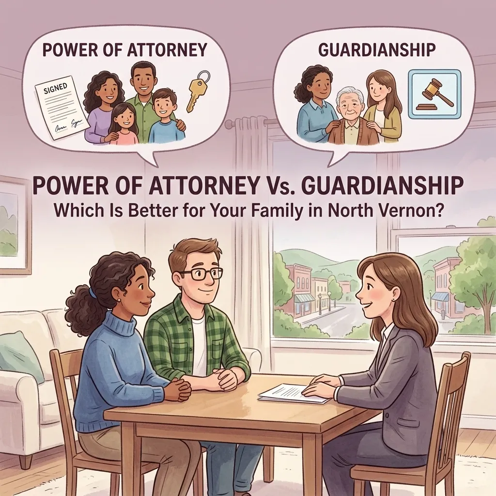
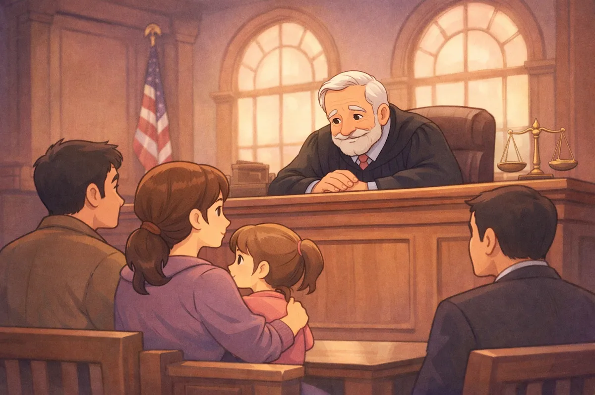
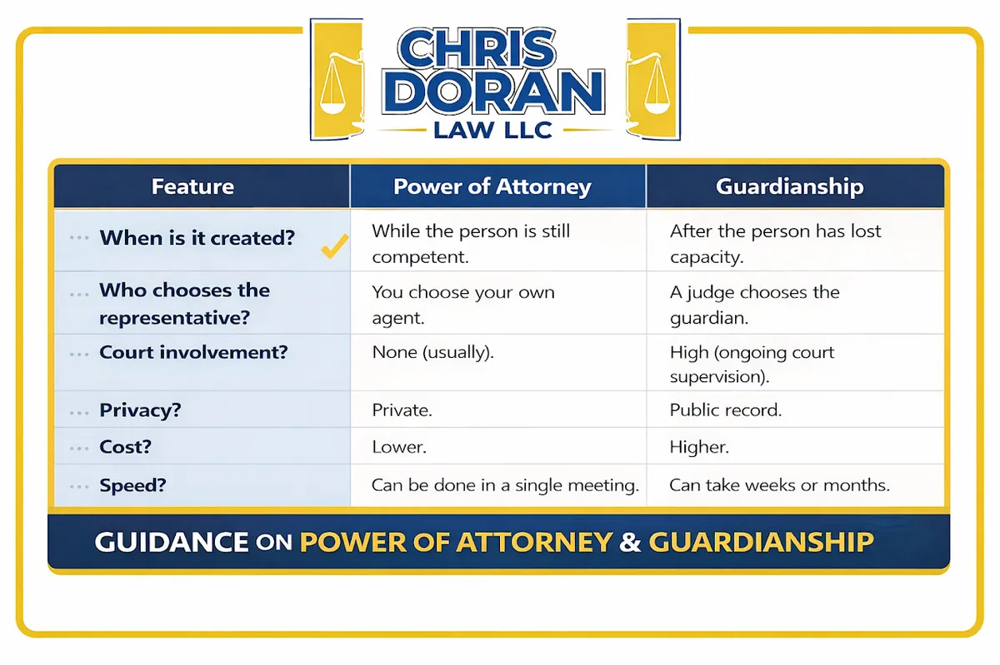

Power of Attorney Vs. Guardianship: Which Is Better for Your Family in North Vernon?

When you are sitting on your porch in North Vernon or grabbing a coffee in Vernon, the last thing you want to think about is what happens if a family member can no longer take care of themselves. It is a heavy topic, and one that most of us in Jennings County tend to put off. However, life has a way of moving fast. Whether it is an aging parent in Hayden or a sudden medical emergency for a loved one in Scipio, knowing the difference between a Power of Attorney and a Guardianship is essential for protecting your family's future.
At Chris Doran Law LLC, I talk to folks every day who are trying to navigate these exact waters. I know it can feel overwhelming. My goal is to listen to what you have to say, give you clear options, and help you find a solution that fits your specific family dynamic. As a small-town lawyer, I wear many hats, and one of the most important is helping my neighbors understand how Indiana law works in plain English.
What is a Power of Attorney? (The Proactive Choice)
Think of a Power of Attorney (POA) as a "safety net" that you build for yourself while you are still healthy and clear-headed. It is a legal document where you (the principal) give someone else (the agent) the authority to make decisions on your behalf. These decisions can cover everything from paying your bills at the local bank to making vital healthcare choices.
The most important thing to know about a Power of Attorney is that it must be created while the person is still "competent." In legal terms, this means they understand what they are signing and who they are giving power to.
Why POA is Often the Preferred Route. For most families in Commiskey and the surrounding areas, a Power of Attorney is the go-to choice for several reasons:
You maintain control. You get to pick exactly who will handle your affairs. It isn't a judge making the call; it is you.
It is private. A POA is a private contract between you and your agent. It doesn't involve the court system unless something goes wrong.
It is cost-effective. Generally, setting up a POA is much cheaper and faster than going through the court process for a guardianship.
Flexibility. You can make a POA "durable," meaning it stays in effect even if you become incapacitated later on.
If you are looking ahead and want to make sure your family isn't left in a lurch, starting with a solid plan is the best way to go. You can read more about how I help people through these decisions on my About Me page.
What is Guardianship? (The Reactive Choice)
Sometimes, despite our best intentions, we don't get the chance to plan ahead. Maybe a loved one's health declined faster than expected, or perhaps a child with special needs is turning eighteen and needs continued support. This is where Guardianship comes in.
Guardianship is a court process. It is used when a person (called the "protected person") can no longer make safe or sound decisions for themselves and they do not have a Power of Attorney in place. In this scenario, a judge in the Jennings County court system has to step in and appoint someone to be the guardian.

The Realities of Guardianship. Unlike a POA, a guardianship is reactive. It happens because there is a problem that needs an immediate legal fix. Here is what you need to know about the process:
Court Involvement. You have to file a petition with the court. This leads to a formal hearing where a judge listens to the evidence.
Medical Evaluations. The court will often require a doctor to provide a report on the person's mental and physical state.
Ongoing Supervision. Once a guardian is appointed, the court doesn't just walk away. The guardian usually has to file regular reports to show the court how the person's money is being spent and how their care is being handled.
Higher Costs. Between court filing fees, potential attorney fees for both sides, and the time involved, guardianship is significantly more expensive than a Power of Attorney.
If you find yourself in a situation where you need to navigate the local legal system, my guide on Jennings County Court 101 can help you understand what to expect when you walk into the courthouse in Vernon.
Power of Attorney vs. Guardianship: The Main Differences
To make it easier to see which might be right for your family, let's look at them side-by-side:

Which is Better for Your Family?
"Better" is a relative term. It really depends on where you are in the process.
Choose Power of Attorney if: Your loved one is still able to communicate their wishes and understands what they are doing. This is the ultimate "plan for a rainy day" move. It keeps the family's business private and keeps the court out of your checkbook.
Choose Guardianship if: Your loved one has already reached a point where they can't understand a legal document or if there is a dispute in the family about who should be in charge. Sometimes, the court's oversight is actually a good thing because it provides a layer of protection for a vulnerable person.
Regardless of which path you need to take, having a lawyer in Vernon who knows the local community can make a world of difference. I have handled a wide variety of complex legal matters during my tenure, and I focus on getting you through the process as smoothly as possible.
The "Small Town" Advantage
When you work with Chris Doran Law LLC, you aren't just a case number. I know that if you are calling me about guardianship or a POA, you are probably going through a stressful time. You might be worried about your mom's house in Scipio or your dad's care in Hayden.
I believe in transparency and honesty. That is why I am upfront about things like travel fees and legal costs from the very first conversation. I am here to solve your legal needs, not add to your stress. I have spent my career helping people in Jennings County, and I pride myself on being approachable.
Taking the Next Step
Whether you are looking to set up a Power of Attorney as part of your estate planning or you are facing the difficult task of filing for guardianship, you don't have to do it alone. The legal system can be a maze, but it is one I walk through every day.
If you are ready to talk about your options, I am ready to listen. We can sit down, go over your family's situation, and figure out the best way to move forward. My goal is to give you peace of mind so you can focus on what really matters: taking care of your family.
Whether you are in North Vernon, Vernon, or anywhere else in Jennings County, I am here to help you solve your legal needs with the respect and personal attention you deserve.